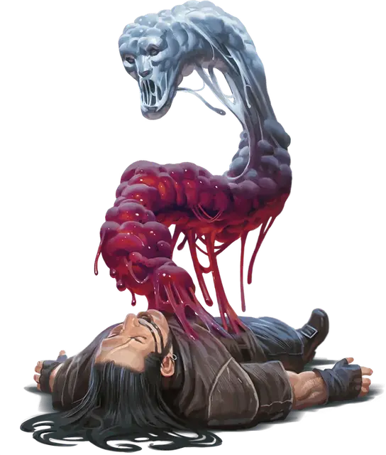

Склизкий преследователь
Slithering Tracker
Средняя Слизь, обычно хаотично-злая

Класс Доспеха 14
Хиты 32 (5к8 + 10)
Скорость 30 футов, плавая 30 футов, лазая 30 футов
| мод | спас | ||
|---|---|---|---|
| СИЛ | 16 | +3 | +3 |
| ЛОВ | 19 | +4 | +4 |
| ТЕЛ | 15 | +2 | +2 |
| мод | спас | ||
|---|---|---|---|
| ИНТ | 10 | +0 | +0 |
| МДР | 14 | +2 | +2 |
| ХАР | 11 | +0 | +0 |
Навыки Выживание +6, Скрытность +8
Уязвимость к урону огонь, холод
Сопротивление урону дробящий, колющий, рубящий от немагических атак
Иммунитет к состояниям окаменение, опутанность, ослепление, сбивание с ног, захват, паралич, глухота, истощение, бессознательность
Чувства слепое зрение 120 футов, пассивное Восприятие 12
Опасность 3 (700 опыта)
Бонус мастерства +2
Среда обитания Город, Подземье
Особенности
Языки. Понимает языки, которые знал в предыдущей форме, но не может говорить.
Обманчивая внешность. Если склизкий преследователь неподвижен в начале боя, он имеет преимущество в броске инициативы. Более того, если существо не наблюдало за движением или действием склизкого преследователя, это существо должно преуспеть в проверке Интеллекта (Расследование) Сл 18, чтобы определить, что склизкий преследователь не является лужей.
Жидкая форма. . Склизкий преследователь может входить на место врага и останавливаться там. Он так же может пройти через пространство в 1 дюйм шириной без усилий.
Паучья ходьба. . Склизкий преследователь может взбираться по сложным поверхностям, включая вверх ногами по потолку, без необходимости проходить проверки.
Действия
Шлепок. . Рукопашная атака оружием: +5 к попаданию, досягаемость 5 футов, одна цель. Попадание: 8 (1к10 + 3) дробящего урона.
Высасывание жизни. . Одно существо Большого размера или меньше, которое склизкий преследователь может видеть в 5 футах от себя, должно преуспеть в спасброске Ловкости Сл 13 или стать схваченным (Сл высвобождения 13). До окончания захвата цель считается опутанной и не может дышать, если только она не может дышать водой. Кроме того, захваченная цель получает 16 (3к10) урона некротической энергией в начале каждого своего хода. Склизкий преследователь может схватить только одну цель одновременно.
Схватив существо, склизкий преследователь получает только половину нанесённого ему урона (округляется в меньшую сторону), а схваченное существо получает вторую половину.
Бонусные действия
Подводная скрытность. Будучи под водой, склизкий преследователь может совершать действие Засада и получает преимущество на проверки Ловкости (Скрытность).
Описание
Жажда мести иногда может привести кого–то к тому, что в результате ритуала он может превратиться в полужидкое сознательное существо, известное как склизкий преследователь. Безобидный и в то же время коварный, преследователь перетекает в места, куда нормальное существо попасть не может и ставит клеймо водяной смерти на свою намеченную жертву.
Ритуал создания склизкого преследователя известен каргам, личам и жрецам, поклоняющимся богам мести. Его можно выполнить только на желающем того существе, которое жаждет мести. Ритуал высасывает всю влагу из тела и убивает его. Но разум живет в луже жидкости, который выделяется из останков вместе с неутолимой жаждой возмездия.
Склизкий преследователь чувствует вкус земли по которой путешествует и ищет любой след своей добычи. Для убийства склизкий преследователь возвышается и окутывает существо, пытаясь утопить жертву и одновременно высосать всю кровь.
Обрушение мести на свою цель не прекращает ни существование склизкого преследователя ни утоляет его голод крови. Некоторые склизкие преследователи продолжают осознавать свою цель и распространяют свою миссию на месть другим, таким как любой кто поддерживал или дружил с первоначальной целью. Однако, большую часть времени разум не может смириться с нахождением в жидкой форме, неспособностью общаться и ведомостью жаждой крови: после того как преследователь выполняет свой долг, безумие берет верх над существом и оно нападает на всех без разбора, пока его в конце концов не уничтожат.